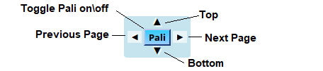
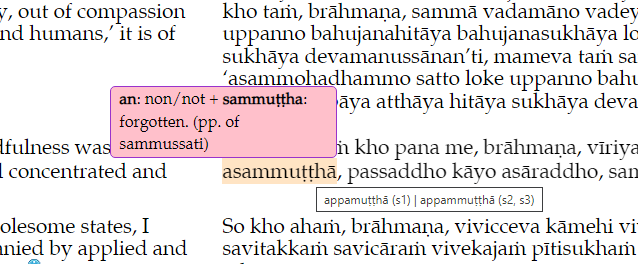

The Buddha’s Words
These pages are designed to make the best available translations of the Buddha’s words easily available in English and Pali. All translations on this site are free from copyright restrictions except for the very limited restrictions requested by some translators. This site is free to download, copy, share and modify as long as it honours the wishes of the translators. Please refer to the copyright page (or the copyright link on each translated page as pictured below) for more information.
The Control Panel
The control panel widget that appears on the right hand side of the screen provides navigation between previous and next pages and between the top and bottom of the page.
The Pali button appears wherever a Pali version is present (not all pages have a Pali translation). Clicking the Pali button toggles Pali on. Pali stays turned on until the button is clicked again.
With Pali showing, hovering the cursor over a Pali word gives you the English translation of available words.

Mobile Devices
The site has been designed to work well on a wide range of screen sizes. On smaller screens a "hamburger symbol" appears.
Navigation Around The Site
Use the navigation at the top of the page to navigate to other pages.
Alternatively, the “breadcrumbs” at the bottom of each page contain clickable links to take you to the top of the current level, the top of the next higher level etc. or to this page. The last entry in the breadcrumbs is the current page.
Useful Links
Also at the bottom of every page are links to:
- A Study Guide for learning the Buddhas teachings based on Bhikkhu Bodhi's "In the Buddha's Words"
- A Help page. (There is also a help link
 just below the site logo on each page.
just below the site logo on each page. - A Cross Reference for converting between Pali Text Society style references and the style of referencing used, for example, by Wisdom Publications etc.
- A page of copyright information.
- A page of information about contacting the Buddha's Words team (i.e. both of us).
Comments (Footnotes)
In the English text, hovering the cursor over an information icon ( Comments or footnotes appear in a pop-up box. ) shows the comment or footnote in a pop up text box. Move the cursor away to close the pop-up box.
Pali Text
The Pali text contains a built-in Pali-English dictionary. Hint: move the cursor downwards to select the word; the translation pops up (if there is one for that word).
Some of the Pali text is highlighted with a beige background to indicate variant Pali readings. Hovering the cursor over the beige word will cause the variant reading to be displayed in a popup.

Search Entire Site
To search the English Content of the entire site, click on the Search English Content link in the header of each page.
To search the Pali Content of the entire site, click on the Search Pali Content link in the header of each page.
Please be warned that the first time either of the search pages is opened may take a while to load … after that it’s fine.
The search results will be displayed as hyperlinks that will take you to the relevant page but not to the exact location on the page. (Hint: Use right click | Open in new tab if you want to keep the results displayed) You will have to Search on Current Page (as below) until a future iteration of this work integrates the two types of searches.
Search on Current Page
Until we are able to implement a Find on this Page function, we recommend using keyboard shortcuts such as the keyboard shortcut on Chrome: Ctrl+F. If Pali is toggled on when searching, both Pali and English matches are highlighted. Use the Next and Previous buttons to move between matches.
Pali searches ignore diacriticals. e.g. to find the word “pariyādāya” simply enter “pariya ..” (or even “par” to find matches).
To locate the sutta to which you have a Pali Text Society reference, a cross reference table is provided here.
Versions of these pages …
These pages are updated regularly to add content, fix mistakes and to make improvements. The easist way to have any updates installed automatically is to install the app as a Progresive Web App (PWA) which performs the updates automatically in the background while you are connected to the internet. Once it is installed in this way, the site is available both online and offline with full functionality. Please see the Help Page for more details.
If you'd like to save the site to a USB drive or to install it manually, the latest version can be downloaded: from this link.
If you need to type the location for some reason, here's a shortened version of the URL: https://tinyurl.com/2p8kcfrrWe've provided both zip and 7-zip archives with identical content. The 7-zip archiving is more efficient but not as easy to use (or as ubiquitous) as zip archives.
Last updated: 11th January 2022